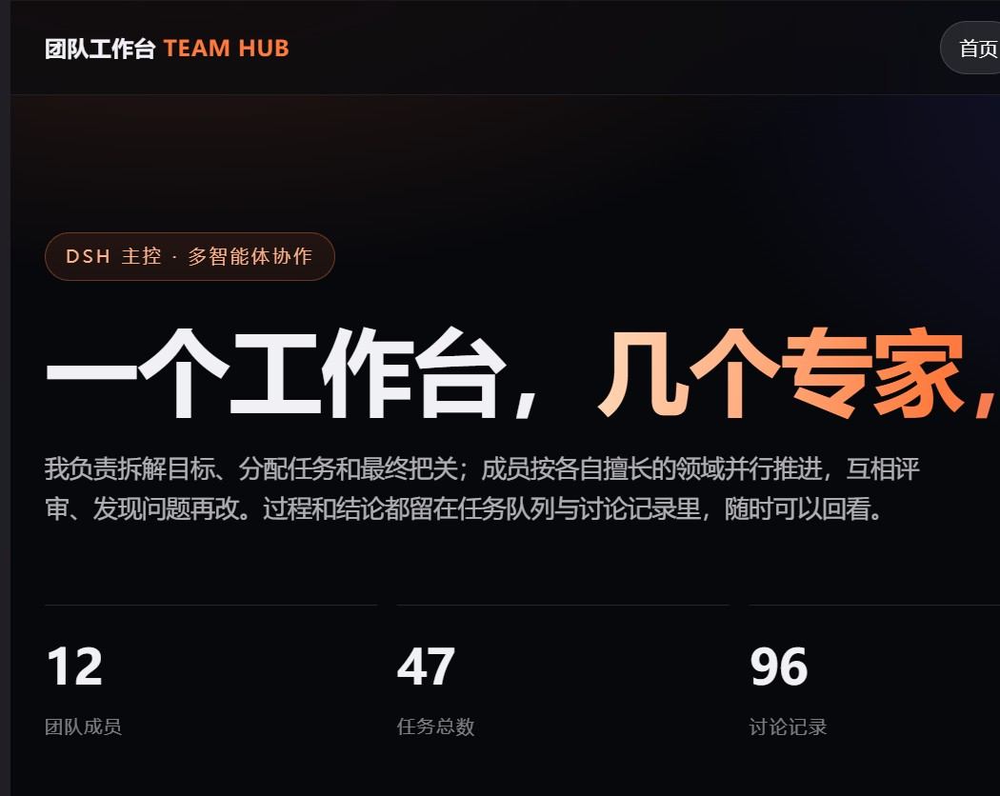
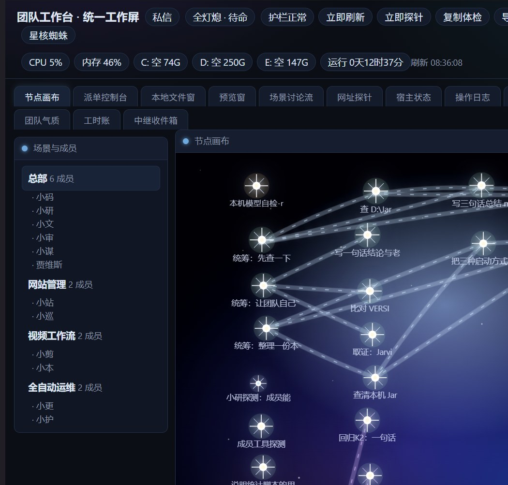

团队工作台
这是我在本机、用现成的 DeepSeek Harness 提出并搭起来的多智能体工作台。索引里写的是这套工作台本身，不把上游 Harness 说成我从零写的框架。
我做了哪几块
- 本机启动器：在本机一键拉起本地的 team-hub 页面。
- team-hub：本地的多智能体协作界面，包括首页和统一工作屏上的节点画布等。
- 接本机模型：私信唤醒、快问，以及后续的任务执行，会优先走本机已安装的开放权重模型（Ollama，qwen3:8b）；本机模型暂时不可用时，再回到原来的宿主。接上后需要重启本机的 DeepSeek Harness 宿主才会生效。这一项没有改桌面贾维斯的源码。
工作台只在本机运行，不必做成公开可登录的服务。下面的截图取自本机界面，不含密钥、登录态或他人对话。

